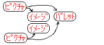
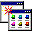

N64 CITextureEditorとは、NINTENDO64上で扱われるCIテクスチャを扱うエディタです。
（現在のバージョンでは、4bit/8bit CIテクスチャ専用となっています。よって、パレットは16bit RGBA/IAのみとなっております。）
PreviewプラグインによってIS-Viewer64と接続する事により、実機上で編集中のテクスチャをプレビューする事ができます。
- ピクチャー （TMF + TLF）
TextureEditorは、TMFというテクスチャ・イメージ・ファイルと TLFというテクスチャ・ルックアップテーブル・ファイル（パレット・ファイルとも呼ぶ）を 一対に扱って編集します。この画像とパレットの一対の構成情報をN64 CITextureEditorでは 「ピクチャー」と呼んでいます。

このピクチャーは複数登録する事可能です。 もちろん他のピクチャーが使っているテクスチャ・イメージやパレットを何度でも自由に参照して 構成する事が出来ます。
-

- プロジェクト
複数のピクチャを一括して管理するのがテクスチャ・プロジェクト・ファイルです。
N64 CITextureEditorでは、１つのテクスチャ・プロジェクト・ファイルのみ編集可能です。


- プラグインについて・・・
プラグインは、PlugInsフォルダ (c:\nintendo\n64kit\texedit\bin\PlugIns\) に格納しておく事で、N64 CITextureEditorが起動時にPlugInsに格納されてあるDLLを認識します。 プラグインにはインポート／エクスポート／プレビューの機能を持ち、メニューに追加されます。
インストールされているプラグインの情報を確認するには、アバウトダイアログで 確認する事が出来ます。詳しくは、プラグイン機能を参照してください。
- アニメーション・プレビュアについて・・・
簡易的にテクスチャのパラパラ・アニメーションを閲覧するためのプレビュープログラムもソース付きで添付されております。
(c:\nintendo\n64kit\texedit\AnimeView\) TAFファイルを編集し、付属のANM.BATを実行する事で、IS-VIEWER64上でアニメーションさせる事が可能です。
Windows95/98/NT4.0以降 RAM32MB以上 空きHD5MB以上必要
※PlugInの開発には、Microsoft社のVisualC/C++5.0 (service pack 2以上)が必要です。
インストールは、Setup.exeを実行して下さい。
| Setup |
アンインストールは「コントロールパネル」の「アプリケーションの追加と削除」を開き、
「インストールと削除」のプロパティページの「N64 CITextureEditor」を選択して「追加と削除」ボタンを
押してアンインストールプログラムを実行して下さい。
|  | → | |
|---|---|---|
| ｱﾌﾟﾘｹｰｼｮﾝの 追加と削除 |
削除 |
起動は「スタート」メニューの「プログラム」の「n64kit」から「N64 CITextureEditor」を選択して 実行して下さい。
終了は、N64 CITextureEditorの「ファイル」メニューの「アプリケーションの終了（Ｘ）」を選択して
終了させて下さい。
なお、終了時に未保存の編集中のファイルが残っている場合は、１つ１つ保存するか尋ねてきますので、
応答して下さい。
N64 CITextureEditorの変更履歴はこちらのページをご覧下さい。

{kind=link}